Séoul ne cesse de surprendre
Découvre Séoul entre palais royaux, quartiers branchés, street food, cafés tendance, K-pop et panoramas entre montagnes, fleuve Han et gratte-ciel.
Gyeongbokgung • Myeong-dong • Hongdae • Bukchon • N Seoul Tower
Palais royaux, villages hanok, temples bouddhistes et quartiers futuristes.
T-money, métro de Séoul, AREX et conseils pratiques pour explorer facilement la capitale.
Myeong-dong, Gyeongbokgung, Bukchon, N Seoul Tower et le fleuve Han.
K-pop, cafés design, street food, shopping, e-sport et vie nocturne animée.
Séoul est une capitale fascinante où les palais royaux côtoient les gratte-ciel, les marchés traditionnels, les cafés les plus créatifs et une scène culturelle parmi les plus dynamiques d'Asie. Moderne sans renier son histoire, elle offre une expérience unique à chaque visite.
De Myeong-dong à Hongdae, de Gangnam à Seongsu-dong, sans oublier Bukchon Hanok Village, chaque quartier possède sa propre identité. Entre shopping, gastronomie coréenne, K-pop, rooftops, temples et promenades au bord du fleuve Han, les découvertes se succèdent du matin jusqu'au bout de la nuit.
Que tu viennes pour la cuisine coréenne, les palais de la dynastie Joseon, les paysages urbains, les cafés atypiques ou l'effervescence de la Hallyu, Séoul est une destination captivante où l'héritage coréen rencontre l'innovation, la créativité et un art de vivre unique.
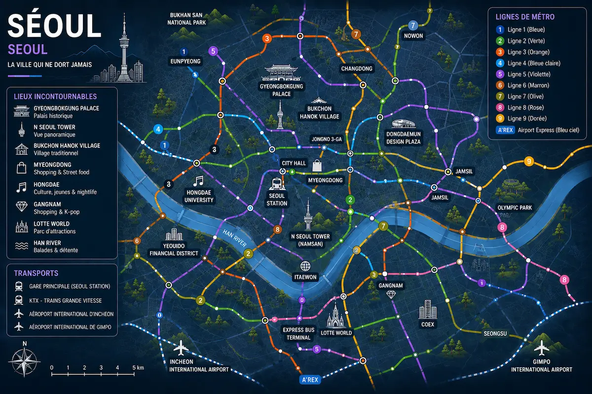
Séoul ne se découvre pas seulement : elle se vit. Entre traditions royales, gastronomie, spectacles, vie nocturne et passion du sport, certaines expériences permettent de découvrir la capitale sud-coréenne sous un angle unique.
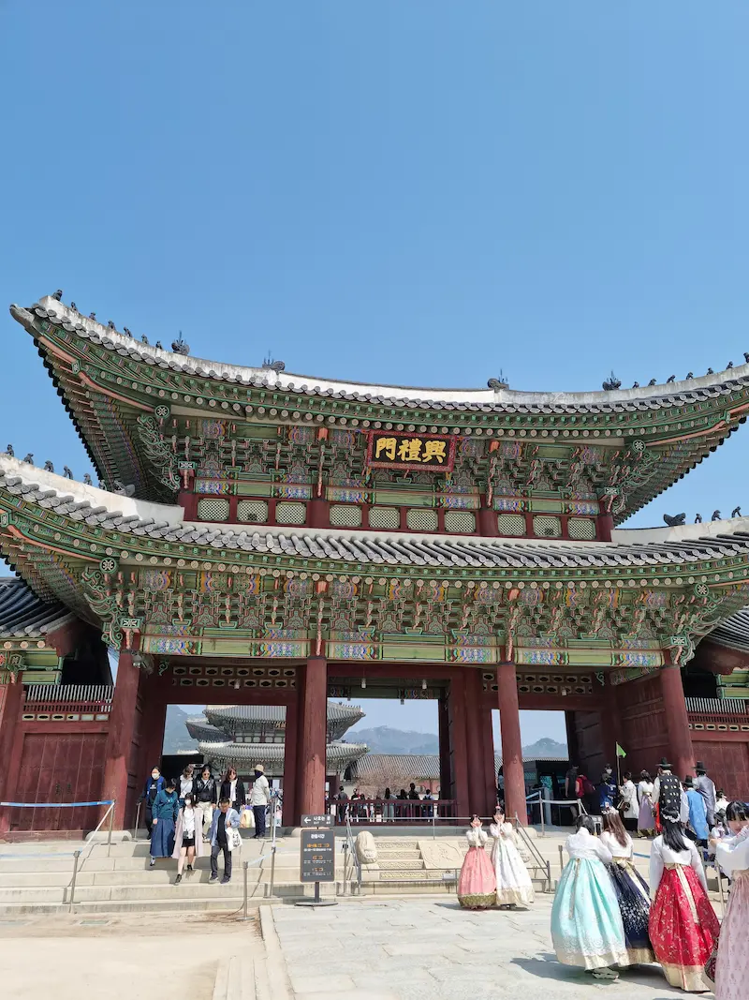
Revêts un hanbok traditionnel avant d'explorer le palais de Gyeongbokgung et les anciennes résidences royales de la dynastie Joseon pour une immersion unique dans l'histoire coréenne.
Voir cette expérience →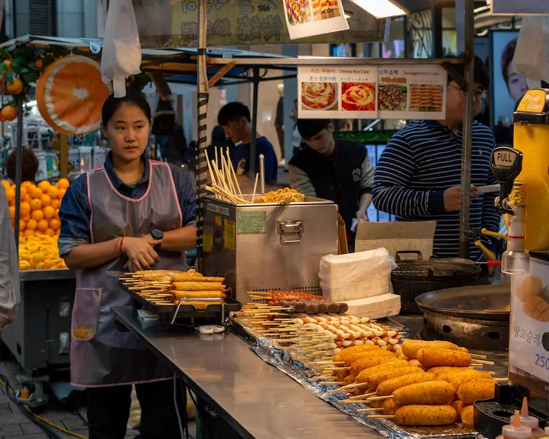
Découvre les saveurs incontournables de la cuisine coréenne dans les marchés de nuit entre tteokbokki, mandu, hotteok, barbecue et spécialités locales.
Voir cette expérience →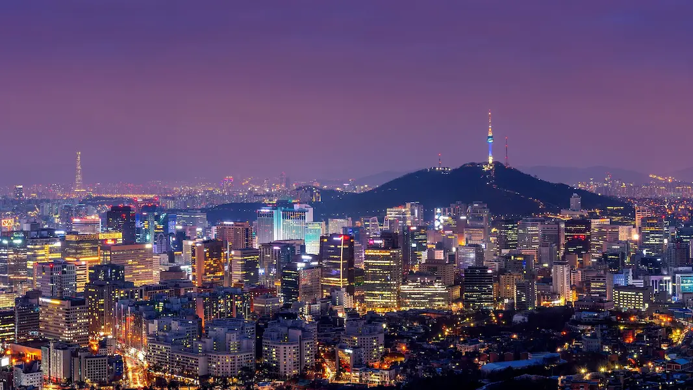
À la tombée de la nuit, Séoul change complètement d'ambiance. Explore ses ruelles animées, ses marchés nocturnes, ses points de vue et ses quartiers illuminés.
Voir cette expérience →Entre humour, cuisine, acrobaties et percussions, NANTA est l'un des spectacles les plus emblématiques de Corée du Sud et une expérience incontournable à Séoul.
Voir cette expérience →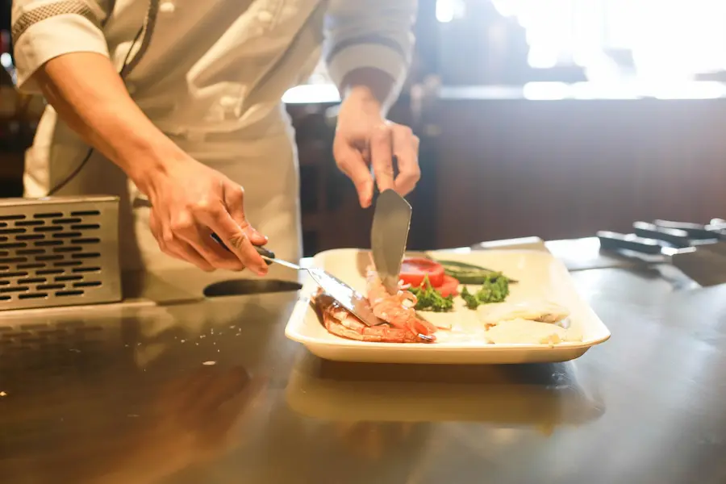
Pars au marché avec ton chef puis prépare plusieurs spécialités coréennes traditionnelles avant de partager un repas convivial dans une ambiance locale.
Voir cette expérience →Découvre l'ambiance incroyable du stade de Jamsil aux côtés des supporters coréens, entre chants, animations, cuisine locale et passion sportive.
Voir cette expérience →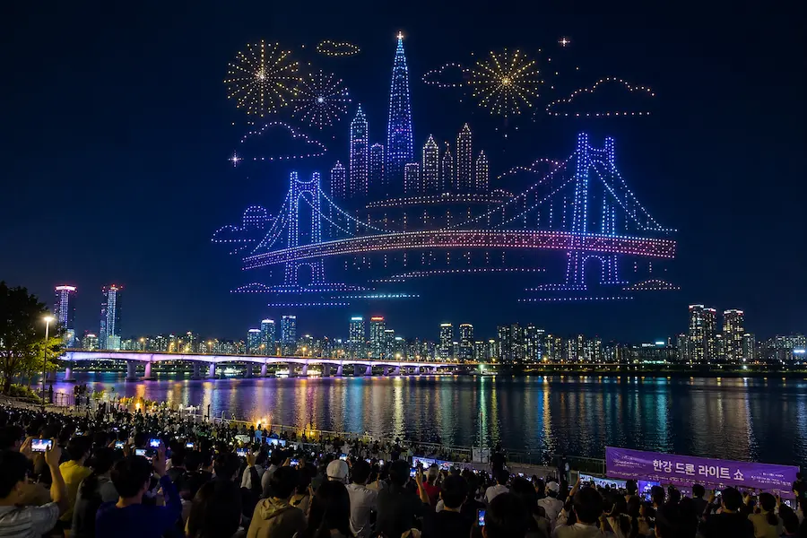
À certaines dates de l'année, des centaines de drones illuminent le ciel au-dessus du fleuve Han en dessinant d'impressionnantes animations lumineuses. Un spectacle gratuit devenu l'un des rendez-vous incontournables des soirées à Séoul.
Consulter les dates →Récupère dès l'aéroport d'Incheon une carte T-money rechargeable et une carte SIM touristique. Tu pourras utiliser immédiatement le métro, les bus, les taxis et profiter d'une connexion Internet partout en Corée du Sud.
Réserver la carte →Pour rejoindre facilement ton hôtel, réserve un transfert privé entre l'aéroport international d'Incheon et Séoul. Une solution idéale pour les arrivées tardives, les familles ou les voyageurs avec de nombreux bagages.
Réserver le transfert →Le Discover Seoul Pass permet d'accéder gratuitement à de nombreuses attractions tout en offrant des réductions dans plusieurs sites touristiques. Sa version physique peut également être utilisée comme carte T-money après rechargement.
Découvrir le pass →Le quartier idéal pour un premier séjour. Shopping, street food, excellentes connexions en métro et proximité des principaux sites touristiques font de Myeong-dong l'un des meilleurs points de départ pour découvrir Séoul.
Le quartier le plus animé de Séoul. Cafés tendance, concerts, boutiques indépendantes, art de rue et vie nocturne attirent une clientèle jeune et dynamique.
Le meilleur secteur pour découvrir les palais royaux, les villages hanok, les salons de thé traditionnels et le patrimoine historique de la capitale coréenne.
Quartier moderne et élégant, Gangnam séduit par ses hôtels haut de gamme, ses centres commerciaux, ses restaurants, ses rooftops et son ambiance cosmopolite.
Parfait pour les familles et les voyageurs recherchant davantage de calme. On y trouve le Lotte World, le parc olympique, le lac Seokchon et de nombreux espaces verts.
Compare les hôtels des principaux quartiers de Séoul et trouve l'hébergement idéal selon ton budget et ton style de voyage.
Du barbecue coréen au poulet frit, en passant par les marchés traditionnels, les produits de la mer et les cafés créatifs, Séoul offre une scène gastronomique aussi variée que passionnante.
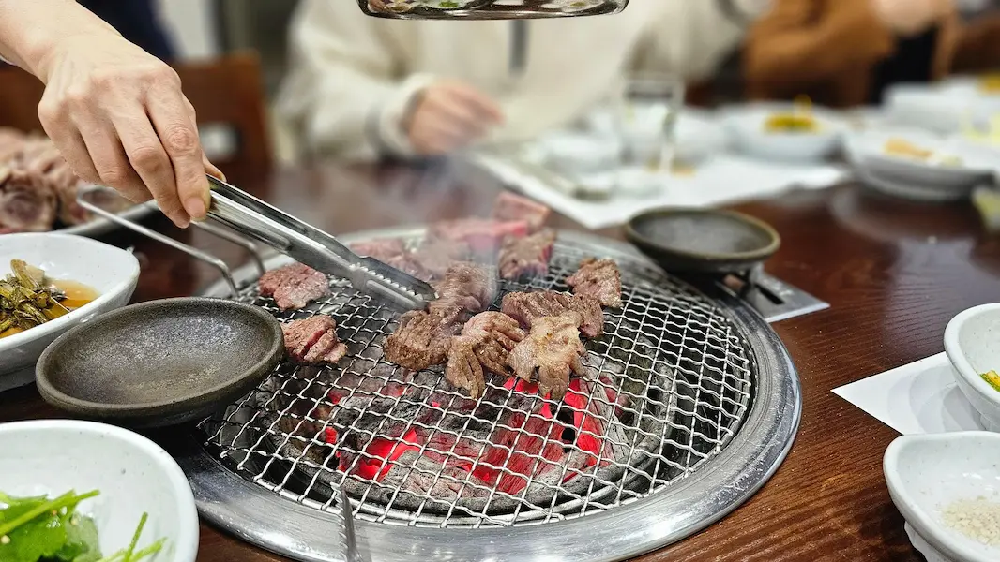
Installe-toi autour d'un grill, fais cuire directement à table différentes pièces de viande et partage ce repas convivial accompagné de banchan, les célèbres petits plats coréens.
Découvrir cette expérience →Croustillant, généreux et décliné avec différentes sauces, le poulet frit coréen est une véritable institution. Accompagné d'une bière fraîche, il forme le célèbre chimaek, particulièrement apprécié lors des soirées entre amis.
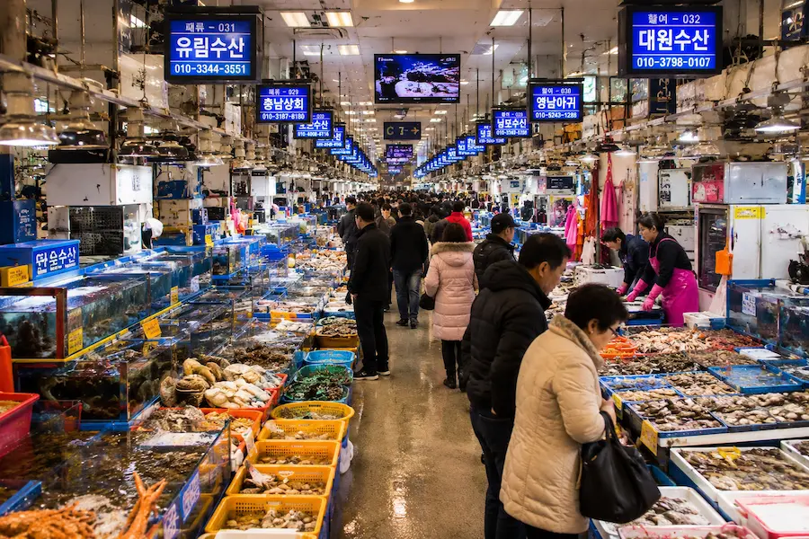
Parcours les étals de l'un des plus grands marchés aux poissons de Séoul, choisis poissons, coquillages ou fruits de mer, puis fais-les préparer dans l'un des restaurants installés directement sur place.
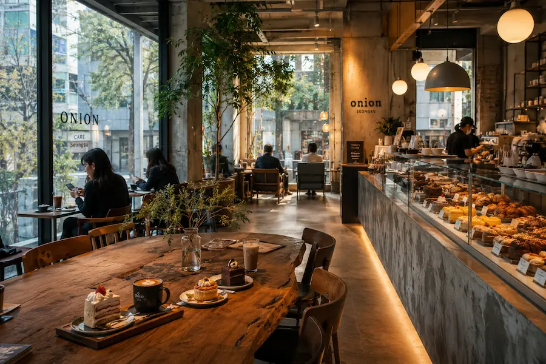
Séoul est réputée pour ses cafés créatifs. Cafés à thème, pâtisseries raffinées, coffee shops minimalistes et lieux au design spectaculaire font partie intégrante de la culture locale.
Des palais de la dynastie Joseon aux gratte-ciel futuristes, en passant par les quartiers emblématiques et les attractions incontournables, Séoul mêle avec élégance traditions millénaires et modernité.
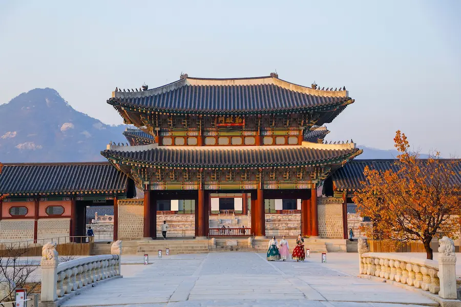
Construit en 1395, le palais Gyeongbokgung est le plus prestigieux de Corée du Sud. Entre pavillons royaux, jardins et relève de la garde, il constitue l'un des symboles historiques de Séoul.
Découvrir cette visite →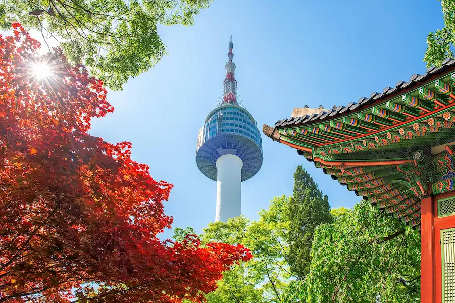
Perchée sur le mont Namsan, la N Seoul Tower offre l'un des plus beaux panoramas sur la capitale, de jour comme de nuit, avec son célèbre téléphérique.
Réserver la visite →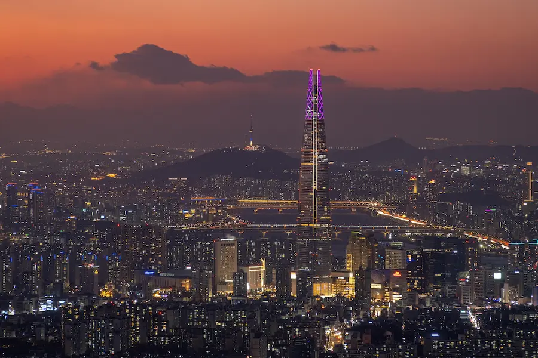
Avec ses 555 mètres de hauteur, la Lotte World Tower domine la skyline de Séoul. Son observatoire Seoul Sky offre une vue spectaculaire sur toute la métropole.
Réserver le billet →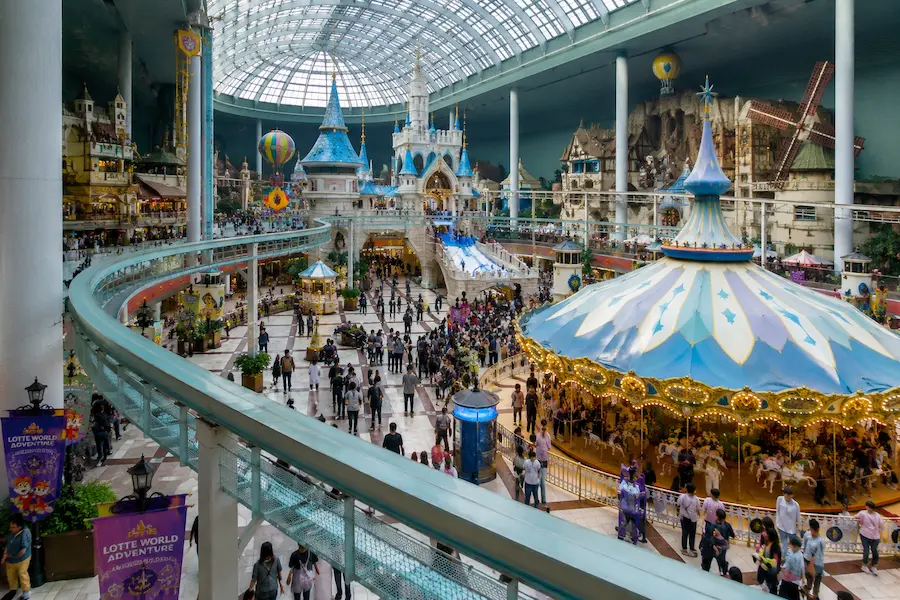
L'un des plus grands parcs d'attractions couverts au monde propose montagnes russes, spectacles, aquarium et animations pour toute la famille.
Réserver le billet →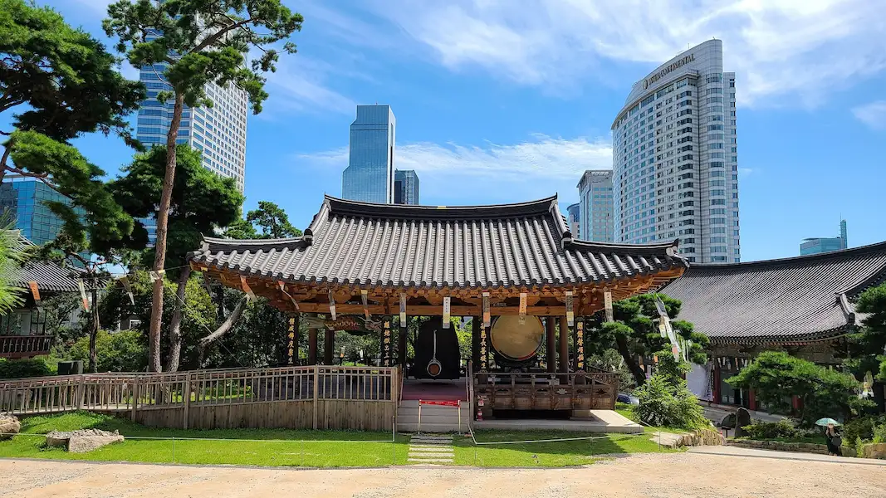
Immortalisé par le célèbre titre « Gangnam Style », ce quartier rassemble boutiques de luxe, cafés tendance, sièges des agences K-pop et architecture contemporaine.
Explorer Gangnam →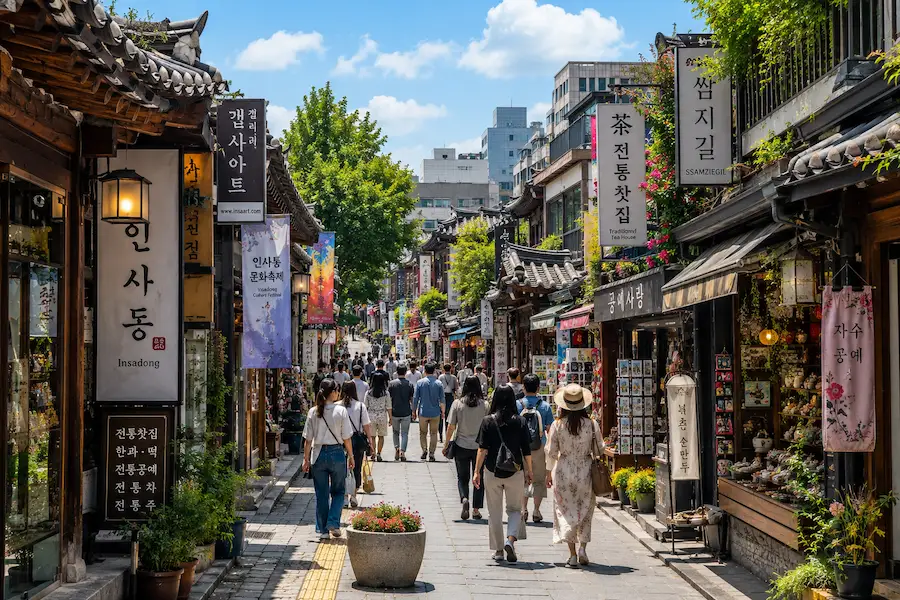
Entre galeries d'art, maisons de thé, boutiques d'artisanat et ruelles traditionnelles, Insadong est le meilleur endroit pour découvrir le savoir-faire coréen.
Découvrir l'expérience →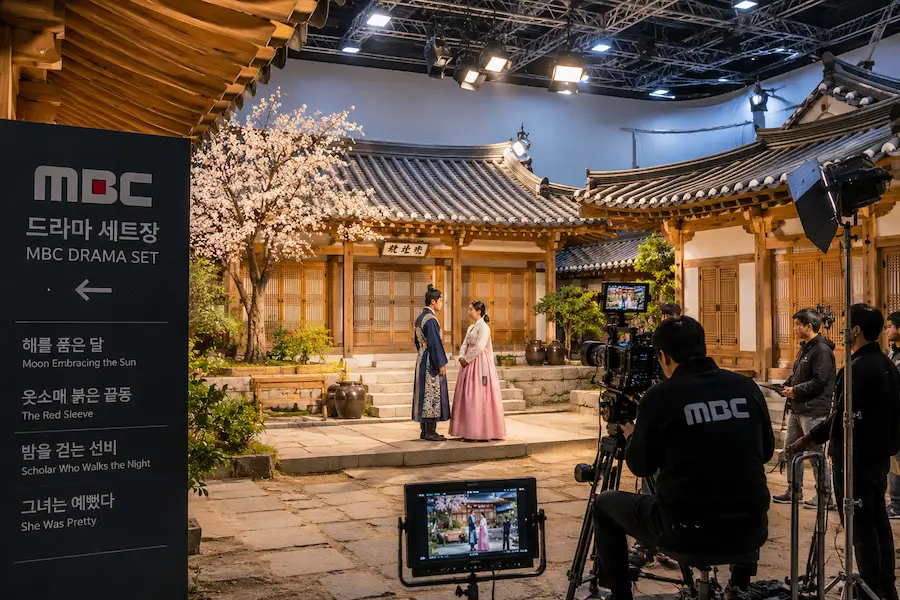
Découvre les coulisses des séries coréennes lors d'une visite des studios MBC. Explore les décors de tournage, les plateaux emblématiques et l'univers des productions qui ont rendu les K-dramas célèbres dans le monde entier.
Découvrir les studios →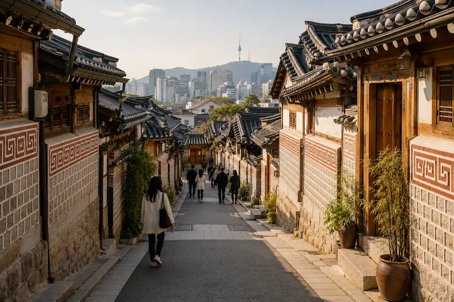
Découvre les quartiers traditionnels du nord de Séoul, leurs ruelles anciennes, leurs sites emblématiques et l'atmosphère animée du marché de Gwangjang, célèbre pour sa street food coréenne.
Découvrir cette visite →Au-delà des palais et des quartiers branchés, Séoul vibre toute l'année au rythme du football, du baseball, de l'e-sport, de la K-pop et des grands événements culturels qui font rayonner la Corée du Sud.
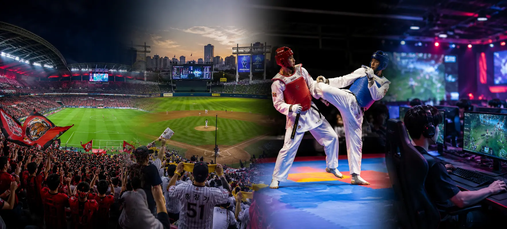
Assister à un match du FC Seoul permet de découvrir l'ambiance passionnée des supporters coréens dans l'impressionnant Seoul World Cup Stadium, construit pour la Coupe du monde 2002.
Les rencontres de KBO League sont réputées pour leur ambiance festive. Chants, pom-pom girls, animations et supporters passionnés transforment chaque match en véritable spectacle.
Séoul est le berceau de l'e-sport moderne. Arènes, PC bangs, compétitions internationales et culture gaming font partie intégrante de la ville.
Concerts, boutiques officielles, cafés à thème, studios et quartiers emblématiques permettent de découvrir l'univers de la Hallyu qui séduit aujourd'hui des millions de fans à travers le monde.
À quelques heures de Séoul, découvre une autre facette de la Corée du Sud. Entre zone démilitarisée, montagnes, villages traditionnels, forteresses historiques et îles préservées, ces excursions figurent parmi les plus belles du pays.
Découvre la célèbre zone démilitarisée qui sépare les deux Corées. Entre le troisième tunnel d'infiltration, les postes d'observation et le pont suspendu, cette excursion est l'une des plus marquantes du pays.
Découvrir cette excursion →Rencontre les adorables alpagas de Gangwon-do avant de découvrir Nami Island, célèbre pour ses magnifiques allées bordées d'arbres qui changent de couleur au fil des saisons.
Découvrir cette excursion →Pars explorer le parc national du mont Seorak, l'une des plus belles régions naturelles de Corée du Sud, entre sommets granitiques, temples bouddhistes et paysages spectaculaires.
Découvrir cette excursion →Explore la majestueuse forteresse de Hwaseong, classée au patrimoine mondial de l'UNESCO, et découvre l'une des villes historiques les mieux préservées de Corée du Sud.
Découvrir cette excursion →Flâne dans le plus célèbre village hanok de Corée, découvre ses maisons traditionnelles, ses ruelles pittoresques et l'atmosphère authentique de l'ancienne capitale culturelle.
Découvrir cette excursion →Entre temples anciens, dolmens classés à l'UNESCO, fortifications et paysages côtiers, l'île de Ganghwa dévoile une Corée plus sauvage et encore méconnue des voyageurs.
Découvrir cette excursion →Séoul est une immense métropole. Même avec un excellent métro, les trajets peuvent être longs. Regroupe les visites par quartier pour profiter pleinement de tes journées.
Gangnam et Hongdae sont incontournables, mais les palais royaux, Bukchon Hanok Village et Insadong permettent de découvrir toute la richesse historique de la ville.
Certaines activités, visites guidées ou observatoires peuvent rapidement afficher complet, notamment pendant les vacances et la saison des cerisiers en fleurs.
Cette carte rechargeable facilite les déplacements dans le métro, les bus et certains taxis. Elle permet également de gagner un temps précieux lors des correspondances.
Faire preuve de discrétion dans les transports, respecter les files d'attente et adopter quelques règles de politesse locales rendent les échanges plus agréables avec les habitants.
Le coréen est la langue officielle. L'anglais est présent dans les principaux sites touristiques, mais quelques mots de coréen sont toujours appréciés.
La monnaie utilisée est le won sud-coréen (₩). Les cartes bancaires sont largement acceptées, mais un peu d'espèces reste utile dans certains marchés.
La Corée du Sud utilise les prises de type C et F en 220 V, identiques à celles utilisées en France. Aucun adaptateur n'est généralement nécessaire.
Quatre à cinq jours permettent de découvrir les principaux quartiers de Séoul. Une semaine est idéale pour ajouter une ou deux excursions aux alentours.
Le printemps pour les cerisiers en fleurs et l'automne pour les couleurs flamboyantes offrent les meilleures conditions pour découvrir Séoul.
Prévois généralement entre 100 € et 220 € par jour selon ton hébergement, tes restaurants, tes activités et ton mode de transport.
Quatre à cinq jours permettent de découvrir les principaux quartiers, les palais royaux, les marchés, les panoramas et les expériences incontournables. Une semaine est idéale pour ajouter une excursion autour de la capitale.
Myeong-dong est souvent le meilleur choix grâce à sa situation centrale, son excellente desserte en métro, ses nombreux hôtels, restaurants et boutiques.
Oui. Les principales stations de métro, les attractions et de nombreux commerces disposent d'informations en anglais. Les applications de traduction facilitent également les échanges.
Certaines spécialités coréennes sont relevées, mais de nombreux plats sont peu ou pas épicés. Les restaurants proposent généralement un large choix adapté à tous les goûts.
Le printemps et l'automne sont les saisons les plus agréables grâce à leurs températures douces, leurs paysages colorés et leurs nombreuses festivités.
Le métro de Séoul est l'un des plus efficaces au monde. Associé à la carte T-money, il permet de rejoindre rapidement tous les principaux quartiers de la capitale.